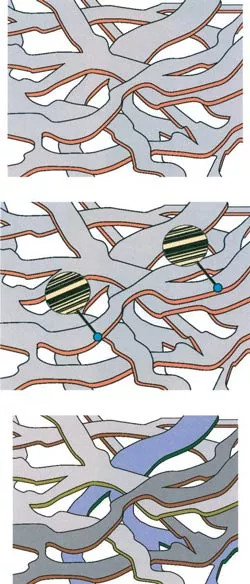
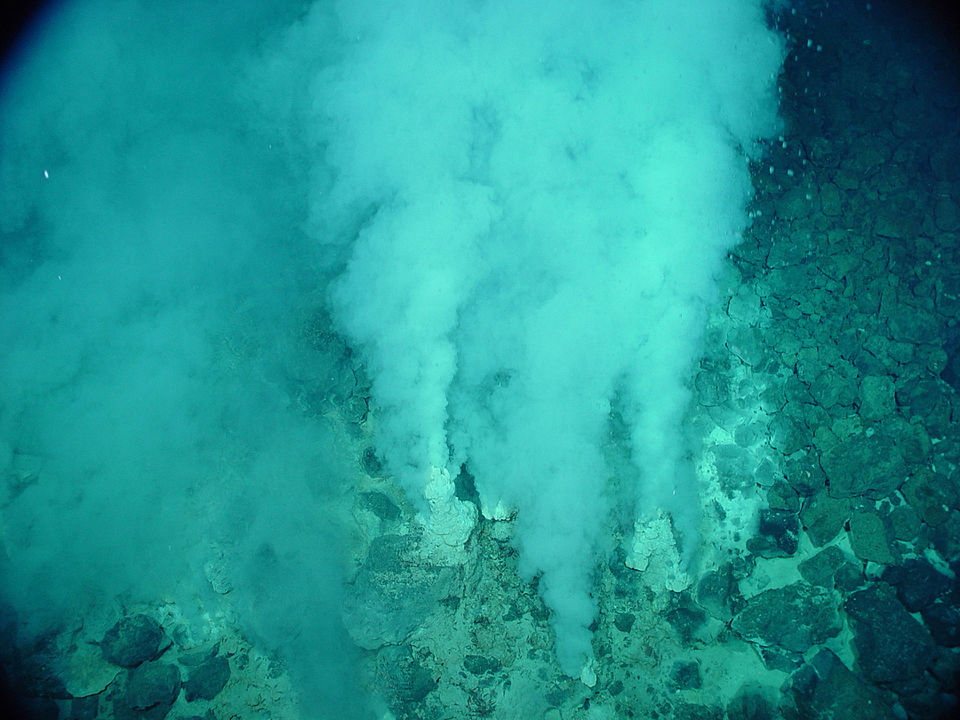
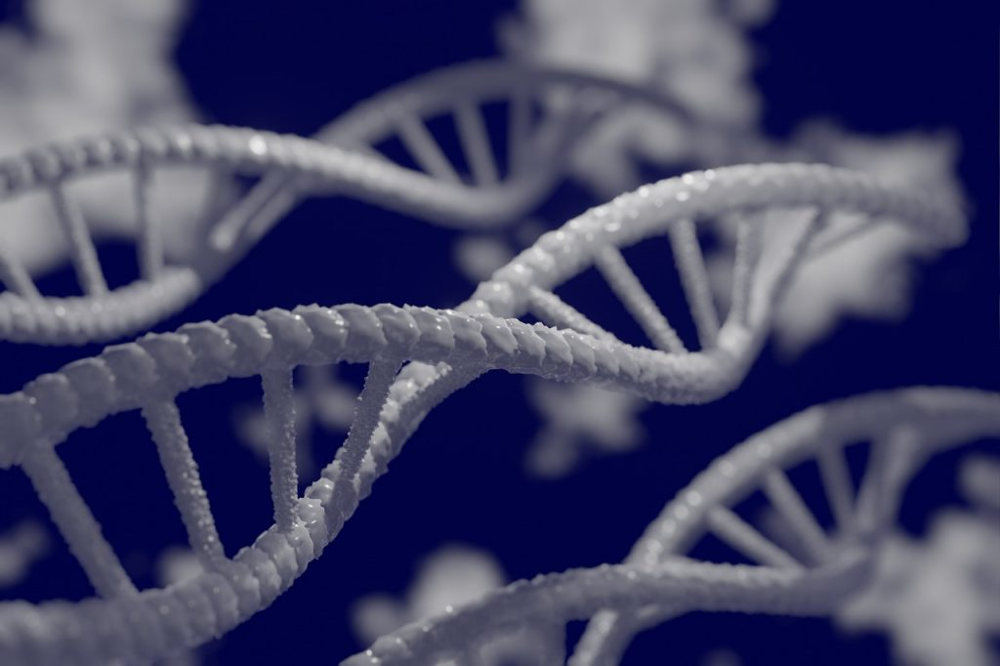
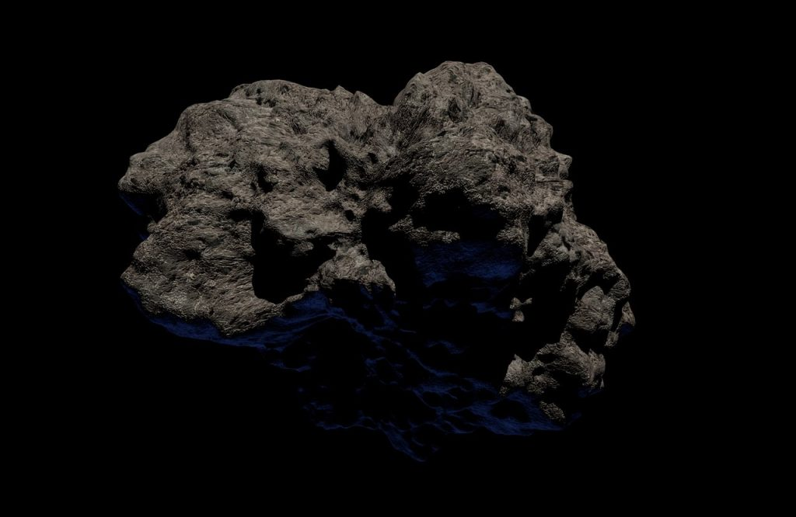

ကမ္ဘာပေါ်မှာ သက်ရှိတွေ ဘယ်လို စတင် ဖြစ်ထွန်း လာသလဲ။ အသက်ဇီဝ ဘယ်လို စခဲ့တာလဲ။ အချို့ သိပ္ပံ စာအုပ်တွေမှာ ရေးကြ သလိုမျိုး ကမ္ဘာဦး သမုဒ္ဒရာ ထဲက အဟာရ တွေနဲ့ ပြည့်နေတဲ့ “ရှေးဦး ဟင်းချိုရည်” (Primordial Soup) ထဲမှာ တကယ်ပဲ စပြီး အသက်ဇီဝ ရယ်လို့ စဖြစ်လာတာလား။
အချို့ ပညာရှင် တွေကလဲ ဓါတ်လိုက် ခံရပြီး အသက်ဇီဝ တွေ စဖြစ်လာတယ်လို့ ဆိုပါတယ်။ အချို့ကလဲ အရမ်း အေးတဲ့ အရပ်မှာ အသက်ဇီဝ ဖြစ်တည်ခဲ့တယ် ဆိုပါတယ်။ နောက်ပြီး ကမ္ဘာပေါ်ကို အသက်ဇီဝ တွေဟာ အခြား ကမ္ဘာကနေ ရောက်လာခဲ့တာ လို့ ဆိုတဲ့ ပညာရှင် တွေလဲ ရှိပါသေးတယ်။
ဒါဆို ဘယ် သီအိုရီ က အမှန်လဲ။ အသက်ဇီဝရဲ့ အစနဲ့ ပါတ်သက်တဲ့ သီအိုရီ တွေကရော ဘယ်နှစ်ခုတောင် ရှိတာလဲ။
အခု ဆောင်းပါးမှာတော့ ကမ္ဘာပေါ်မှာ အသက်ဇီဝ စတင် ဖြစ်ပေါ် လာတာနဲ့ ပါတ်သက်တဲ့ သီအိုရီ ၇ ခုကို တင်ပြ ဆွေးနွေး သွားမှာ ဖြစ်ပါတယ်။
(ဆောင်းပါး ဖတ်ပြီးရင် စာဖတ်သူ တွေရဲ့ အကြိုက်ဆုံး သီအိုရီ ကလေးလဲ မှတ်ချက်လေး ပေးခဲ့ ကြပါခင်ဗျာ။)
မိုးကြိုးပစ်ခံရလို့ဖြစ်လာတာ
လျှပ်စီး မိုးကြိုးတွေက ပထမဆုံး အသက်ဇီဝ ဖြစ်ပေါ်လာဖို့ ဓါတ်ပြုမှု အတွက် လိုအပ်တဲ့ စွမ်းအင်ကို ထုတ်ပေးတယ်လို့ အချို့က ယူဆကြ ပါတယ်။ ကမ္ဘာဦး လေထုထဲမှာ ရေငွေ့တွေ၊ မိသိန်း ဓါတ်ငွေ့၊ အမိုးနီးယား ဓါတ်ငွေ့ နဲ့ ဟိုက်ဒြိုဂျင် ဓါတ်ငွေ့တွေ ပေါကြွယ်ဝ ပါတယ်။ ဒီ ဓါတ်ငွေ့တွေ ကြားထဲ လျှပ်စီး မိုးကြိုးရဲ့ ပြင်းထန်တဲ့ လျှပ်စစ် ဓါတ်အား ဖြတ်ပြီး စီးဆင်းတဲ့ အခါမှာ ဒီ ဒြပ်ပေါင်းတွေ အချင်းချင်း ဓါတ်ပြုမှု ဖြစ်ပြီး အမိုင်နို အက်ဆစ် နဲ့ သကြား ထွက်လာပါတယ်။ ဒီအချက်ကို ၁၉၅၃ ခုနှစ်က မီလာ နဲ့ ယူရေး သိပ္ပံ ပညာရှင် နှစ်ဦးက လက်တွေ့ စမ်းသက်ချက် (Miller-Urey Experiment) နဲ့ သက်သေ ပြခဲ့ပြီး ဖြစ်ပါတယ်။(မှတ်ချက်။ အော်ဂဲနစ် ဒြပ်ပေါင်း (Organic Compounds) ဆိုတာက ကာဗွန် နဲ့ ဟိုက်ဒြိုဂျင် ပါဝင်တဲ့ ဒြပ်ပေါင်းတွေ ဖြစ်ကြပါတယ်။ သက်ရှိတွေရဲ့ကိုယ်ခန္ဓာကို ဖွဲ့စည်းထားတဲ့ ဒြပ်ပေါင်း တွေ ဖြစ်ပါတယ်။)
သုတေသန ပြုချက် တွေအရ ကမ္ဘာဦး လေထုထဲမှာ ဟိုက်ဒရိုဂျင် ဓါတ်ငွေ့တွေ သိပ်များများ မပါရှိခဲ့ဘူး လို့ ဆိုပါတယ်။ ဒါပေမယ့် မီးတောင် ပေါက်ကွဲမှုတွေ အမြောက် အများ ဖြစ်ခဲ့တာမို့ ဒီ မီးတောင်တွေက ထွက်တဲ့ မိသိန်း၊ အမိုနီးယား နဲ့ ဟိုက်ဒရိုဂျင် ဓါတ်ငွေ့တွေဟာ ကမ္ဘာဦး အသက်ဇီဝ စတင် ဖြစ်ပေါ်လာဖို့ လုံလောက်တဲ့ အခြေခံ ဒြပ်ပေါင်းတွေ ဖြစ်ခဲ့မယ်လို့ ယူဆ ကြပါတယ်။
ရွှံ့ထဲမှာအသက်ဇီဝစဖြစ်တယ်
ကမ္ဘာပေါ်မှာ အသက်ဇီဝ စဖြစ်လာမယ့် အော်ဂဲနစ် မော်လီကျူး တွေဟာ ရွှံစေး (clay) ပေါ်မှာ ပေါင်းစုံ မိကြတာလဲ ဖြစ်နိုင်ပါတယ်။ ဒီ အိုင်ဒီယာကို စတင် အကြံပြုခဲ့ သူကတော့ စကော့တလန် ပြည် ဂလတ်စကို တက္ကသိုလ် (University of Glasgow in Scotland) က ဓါတုဗေဒ ပညာရှင် အလက်ဇန်းဒါး ဂရေဟမ် ကန်း-စမစ် (Alexander Graham Cairns-Smith) ပဲ ဖြစ်ပါတယ်။
သက်ရှိတွေရဲ့ မျိုးရိုးဗီဇ ဒီအန်အေ (DNA) ရဲ့ အဓိက တာဝန် ကတော့ ဒီ သက်ရှိတွေရဲ့ ကိုယ်ခန္ဓာ ထဲက အခြား မော်လီကျူးတွေ ဘယ်လိုပုံ အစီအစဉ် ချပေးရ မလဲ ဆိုတဲ့ အချက်အလက် တွေကို သိမ်းပေးထားတာပဲ ဖြစ်ပါတယ် (ကျွန်တော်တို့ ကွန်ပြူတာ ထဲက Hard Disk လိုပေါ့ဗျာ)။ ဒီ DNA ထဲက အချက်အလက် တွေကို အသုံး ပြုပြီး သက်ရှိတွေရဲ့ ဆဲလ် တွေ ထဲမှာ ရှိတဲ့ အမိုင် နို အက်ဆစ် တွေကို ပရိုတင်း တွေ အဖြစ် ဆက်ပြီး စီပေးတာ ဖြစ်ပါတယ်။ (ဘာသာပြန်သူ မှတ်ချက်။ အမိုင်နို အက်ဆစ် အမျိုး ၂၀ ရှိပါတယ်။ ABC အက္ခရာ တွေလိုပေါ့။ ဒီ အမိုင်နို အက်ဆစ် တွေကို ရှေ့နောက် ဆက်ပြီး စီပေးလိုက်ရင် ပရိုတင်းတွေ ဖြစ်လာပါတယ်။ DNA က ဒီ အမိုင်နို အက်ဆစ်တွေကို ဘယ် အစီ အစဉ် အတိုင်း စီပေး ရမလဲ ဆိုတာကို မှတ်ထားတာပါ။)
ဓါတု ပညာရှင် စမစ် ရဲ့အယူအဆ အရ ရွှံ့စေးထဲမှာ ပါဝင်တဲ့ သတ္တုဓါတ် တွေက မော်လီကျူး တွေကို သင့်တော်တဲ့ အစီအစဉ် အတိုင်း ဖြစ်လာအောင် စီပေးနိုင်စွမ်း ရှိတယ် လို့ ဆိုပါတယ်။ နောက်ပိုင်း အော်ဂဲနစ် မော်လီကျူးတွေ များလာတဲ့ အခါ ရွှံ့စေးရဲ့ အကူအညီ မလိုတော့ပဲ ရှိပြီးသား အော်ဂဲနစ် မော်လီကျူးတွေ ကပဲ နောက်ထပ် အော်ဂဲနစ် မောလီကျူး တွေကို ဖန်တီး ထုတ်လုပ် ပေးလာ ပါတယ်။
ပင်လယ်ရေအောက်မှာအသက်ဇီဝစဖြစ်လာတယ်
နက်ရှိုင်းတဲ့ သမုဒ္ဒရာ အောက် ကြမ်းပြင်မှာ Sea vent / Hydrothermal vent ခေါ်တဲ့ အပေါက်တွေ ရှိပါတယ်။ ဒီ အပေါက်တွေဟာ သမုဒ္ဒရာ ကြမ်းပြင်ရဲ့ အောက်က ချော်ရည်ပူတွေ ရှိတဲ့ အလွှာထဲထိ ပေါက်နေတာပါ။အကြမ်းဖျင်း ပြောရရင် ကုန်းပေါ်က မီးတောင်တွေနဲ့ ဆင်ဆင် တူပါတယ်။ သမုဒ္ဒရာ ရေက ဒီ အပေါက်ထဲ ဝင်သွားပြီး အောက်က ချော်ရည်ပူ တွေနဲ့ ထိမိတဲ့ အခါ အငွေ့ပျံ သွားပါတယ်။ အငွေ့ပျံ သွားတဲ့ ရေငွေ့တွေက ဒီ အပေါက် တွေကနေ အပေါ်ကို ပြန်တက် လာပါတယ်။ ဒီ ရေနွေးငွေ့ တွေကြောင့် အနီအနား ပါတ်လည်က ရေကလဲ ပူနွေး နေပါတယ်။

ဒီ sea vent နား ပတ်လည်က ကျောက်တုံးတွေ ကြားထဲမှာ ဒီ ဟိုက်ဒြိုဂျင် ဒြပ်ပေါင်း တွေ စုမိလာပါတယ်။ တချိန်ချိန်မှာတော့ ဒီ ဒြပ်ပေါင်းတွေ ပေါင်းမိသွားပြီး ကမ္ဘာ့ ပထမဆုံး အသက်ဇီဝတွေ စတင် မွေးဖွား လာ ကြပါတယ်။
ရေခဲရေထဲမှာအသက်ဇီဝစတင်မွေးဖွားလာတယ်
လွန်ခဲ့တဲ့ နှစ် သန်း ၃,၀၀၀ လောက်က သမုဒ္ဒရာ နေရာ အနှံ့အပြားကို ရေခဲတွေနဲ့ ဖုံးလွှမ်းထား တယ်လို့ ယူဆရပါတယ်။ ဒီ ရေခဲတွေကို ထုအားဖြင့် ပေ ရာနဲ့ချီ ထူပါတယ်။ ဒီ ရေခဲလွှာကြီးက သူ ဖုံးလွှမ်းထားတဲ့ သမုဒ္ဒရာ ထဲမှာ ဖြစ်ထွန်းလာတဲ့ အော်ဂဲနစ် ဒြပ်ပေါင်း တွေကို နေရောင်ကြောင့် မပျက်စီး သွားအောင် ကာကွယ်ပေး ထားပါတယ်။RNA ကစတယ်
မျိုးရိုးဗီဇ မော်လီကျူး တွေ ဖြစ်တဲ့ DNA ကို ဖန်တီးဖို့ ပရိုတင်း (Protein) တွေ လိုပါတယ်။ တခါ ပရိုတင်းတွေ ဖြစ်လာဖို့ DNA ထဲက သတင်း အချက်အလက် တွေ လိုပြန်ပါတယ်။ အဲ့သည်တော့ DNA နဲ့ ပရိုတင်း ဘယ်သူ အရင် စဖြစ်တာလဲ ဆိုတဲ့ ပြဿနာ ပေါ်လာပါ တော့တယ်။ (ကြက်မ နဲ့ ကြက်ဥ ပြဿနာ လို့ပေါ့ဗျာ။)သိပ္ပံ ပညာရှင် များရဲ့ အဆိုအရ ဒီ နှစ်ခုလုံး ဟာ အတူတူ ဖြစ်လာခဲ့တယ် လို့ ဆိုပါတယ်။ ဒီ နှစ်ခုလုံးဟာ RNA ကနေ စဖြစ်လာတာ လို့ ဆိုပါတယ်။ RNA ရဲ့ ထူးခြားတဲ့ စွမ်းဆောင်ရည် တခုကတော့ သူဟာ ပရိုတင်းတွေကို ပြုလုပ်ရာ မှာလဲ ပါဝင်သလို DNA ကို ဖန်တီးရာ မှာလဲ ပါဝင်နိုင်တာပဲ ဖြစ်ပါတယ်။

ဒါ့ကြောင့် ကမ္ဘာပေါ်မှာ ပထမဆုံး DNA နဲ့ ပရိုတင်း တွေကို RNA ကနေ ထုတ်ပေးတာ ဖြစ်နိုင်တယ် လို့ ဆိုပါတယ်။ နောက်ပိုင်းကျမှာ ဒီ တာဝန်တွေကို ပရိုတင်း နဲ့ DNA က ခွဲဝေပြီး တာဝန် ခွဲယူ လိုက်ကြတာပါ (ဒီ နှစ်ခုက အလုပ်ပိုပြီး သေသေသပ်သပ် လုပ်နိုင်စွမ်း ရှိပါတယ်။)
ဒီသီအိုရီမှာ ပြဿနာ ရှိလာတာက RNA ဘယ်လို စဖြစ်လာတာလဲ ဆိုတာပဲ ဖြစ်ပါတယ်။ အချို့ သိပ္ပံ ပညာရှင် တွေကတော့ ကမ္ဘာဦး RNA ဟာ သူ့ဟာသူ မော်လီကျူးတွေ မတော်တဆ ပေါင်းမိပြီး ဖြစ်လာတယ်လို့ ယူဆ ကြပါတယ်။ အချို့ကတော့ ဒီလို သူ့အလိုလို အော်တိုမက်တစ် ပေါင်းမိဖို့ ဆိုတာ မဖြစ်နိုင်ဘူး လို့ ဆိုကြပါတယ်။
ဒီတော့ ကမ္ဘာဦး RNA ဘယ်လို စဖြစ်လာတာလဲ။ ဒါနဲ့ ပါတ်သက်တဲ့ နောက်ဆုံး သီအိုရီ နှစ်ခု ကို ဆက် တင်ပြ ပေးပါမယ်။
အသက်ဇီဝကရိုးရိုးရှင်းရှင်းလေးစဖြစ်လာတယ်
အသက် ဇီဝဟာ RNA လိုမျိုး ရှုပ်ထွေးတဲ့ ဒြပ်ပေါင်း တွေကနေ စတာ မဟုတ်ပဲ ဒီ့ထက် သေးငယ်ပြီး ဒီ့ထက် ရိုးရှင်းတဲ့ မော်လီကျူး လေးတွေကနေ စခဲ့တာလို့ ဆိုပါတယ်။ ဒီ မော်လီကျူး အသေးလေးတွေ တဖြည်းဖြည်း ပေါင်းမိပြီး ဒီ့ထက် ပိုကြီးတဲ့ မော်လီကျူး တွေ ဖြစ်လာကြတယ်။ဒီမော်လီကျူးတွေဟာ အခုခေတ် ဆဲလ် တွေကို ဖုံးအုပ်ထားတဲ့ ဆဲလ် နံရံ တွေ လိုမျိုး အမြှေးပါး လေးတွေ ထဲမှာ စုမိတာမျိုး ဖြစ်ကောင်း ဖြစ်နိုင်ခဲ့ပါတယ်။ (ဆဲလ် နံရံ Cell Wall ဆိုတာကလဲ မော်လီကျူး လေးတွေ စုမိပြီး ဖြစ်လာတာပါ။ ရေထဲမှာ ဆီ လုံးလေးတွေ ဖြစ်လာသလိုပါပဲ။)
အချိန် ကြာလာတော့ ရိုးရှင်းတဲ့ အော်ဂဲနစ် ဒြပ်ပေါင်း တွေ ပေါင်းမိပြီး ဒီ့ထက် ပိုရှုပ်ထွေးတဲ့ ဒြပ်ပေါင်းတွေ ဖြစ်လာကြ ပါတယ်။ ဒီ ရှုပ်ထွေးတဲ့ အော်ဂဲနစ် ဒြပ်ပေါင်းတွေက သက်ရှိ ဇီဝ ဖြစ်စဉ် တွေကို ရိုးရှင်းတဲ့ ဒြပ်ပေါင်းတွေထက် ပိုပြီး ထိထိရောက်ရောက် လုပ်ဆောင်နိုင် ကြပါတယ်။
ဒီ သီအိုရီက အပေါ်က ပြောခဲ့တဲ့ RNA စဖြစ်တဲ့သီအိုရီရဲ့ ပြောင်းပြန်ပါ။ အခု သီအိုရီက ဇီဝ ဖြစ်စဉ် က အရင် စဖြစ်တယ် ဆိုတဲ့ သီအိုရီ ဖြစ်ပြီး RNA သီအိုရီ ကတော့ မျိုးရီုး ဗီဇ က အရင် စဖြစ်တယ် ဆိုတဲ့ အမြင်ကို အခြေခံတာ ဖြစ်ပါတယ်။
အသက်ဇီဝဟာကမ္ဘာပြင်ပကနေရောက်လာခဲ့တယ်
ရုတ်တရက် ကြည့်ရင် စိတ်ကူးယဉ် ဆန်သလို ထင်ရပေမယ့် ဒီ သီအိုရီက အချို့ သိပ္ပံ ပညာရှင်တွေ တင်ပြတဲ့ ယူဆချက် ဖြစ်ပါတယ်။ ဒီနေရာမှာ ကမ္ဘာပေါ်ကို ရောက်လာတဲ့ အသက်ဇီဝရဲ့ မူရင်း နဲ့ ပါတ်သက်ပြီးတော့လဲ အယူအဆ နှစ်ခု ကွဲပါသေးတယ်။ပထမ အယူအဆ ကတော့ ကမ္ဘာပေါ်ကို မားစ် (အင်္ဂါဂြိုဟ်) ပေါ်ကနေ သက်ရှိတွေ ရောက်လာခဲ့တယ် ဆိုတဲ့ အယူအဆ ဖြစ်ပါတယ်။ အင်္ဂါဂြိုဟ်ရဲ့မျက်နှာပြင်ကို ဥက္ကာတုံးတွေ အပြင်းအထန် ကျရောက် ထိမှန် ခဲ့ဖူးပါတယ်။ ဒီ ထိမှန်ချက်ကြောင့် အာကာသထဲ လွင့်ထွက်လာတဲ့ ဥက္ကာပျံ တွေ ထဲက အချို့ ကမ္ဘာပေါ်ကို ကျရောက်ခဲ့တဲ့ အထောက်အထား တွေလဲ တွေ့ရှိ ထားပါတယ်။

နောက် အယူအဆကတော့ အသက်ဇီဝ ဟာ နေ အဖွဲ့အစည်း ပြင်ပက အခြား ကြယ် အဖွဲ့အစည်း တွေကနေ ဥက္ကာပျံ၊ ကြယ်တံခွန် တွေနဲ့ အတူ ကမ္ဘာပေါ်ကို ရောက်ရှိ လာခဲ့တယ် ဆိုတဲ့ အယူ အဆ ဖြစ်ပါတယ်။
ဒီ အယူ အဆ နှစ်မျိုး စလုံး က သူ့ဟာ နဲ့ သူတော့ စိတ်ဝင်စားစရာ ကောင်းနေပါတယ်။ ဒါပေမယ့် ပြဿနာက အဓိက မေးခွန်း ဖြစ်တဲ့ “ကမ္ဘာပေါ်မှာ အသက်ဇီဝ ဘယ်ကစလဲ” ဆိုတဲ့ မေးခွန်းကို ကြေနပ်လောက်အောင် အဖြေမပေးနိုင် တာပဲ ဖြစ်ပါတယ်။ ဒီ့အစား “ကမ္ဘာပေါ်မှာ အသက်ဇီဝ ဘယ်ကစလဲ” ဆိုတဲ့ မေးခွန်း နေရာမှာ “ကမ္ဘာ အပြင်ဖက်မှာ အသက်ဇီဝ ဘယ်လို အစပြု ခဲ့တာလဲ” ဆိုတဲ့ ပိုမို ရှုပ်ထွေးတဲ့ မေးခွန်းနဲ့ အစားထိုး လိုက်တာပဲ ဖြစ်ပါတယ်။
Reference: 7 Theories on the Origin of Life | Live Science